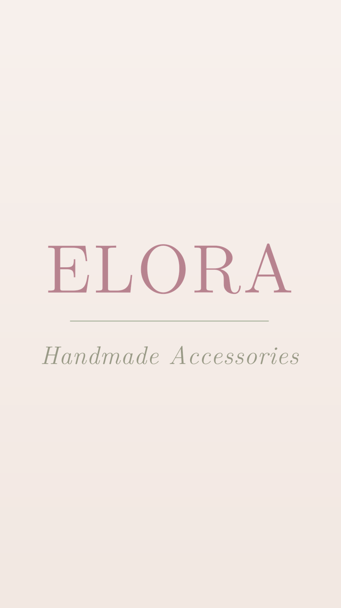

كل ما تحتاجينه — من الجوال، بلا برامج
المتجر صفحة واحدة على الإنترنت تعرض صور منتجاتك مرتّبة بالتصنيفات. الزبونة تصل إليها بثلاث طرق: بمسح الباركود من كرت العمل، أو من رابط بايو انستقرام، أو من رابط ترسلينه لها مباشرة.
حين تضغط أي صورة، تفتح بحجمها الكامل ومعها اسم المنتج وزر «اطلب عبر واتساب». بضغطة واحدة تفتح محادثتك ومكتوب فيها اسم القطعة تلقائيًا — فتصلك الرسالة وأنتِ تعرفين أي قطعة تقصد، دون سؤال ولا لبس.
| الصفحة | لمن |
|---|---|
| المتجر | للزبائن — هذا ما يفتحه الباركود |
| لوحة التحكم | لكِ وحدك — الإضافة والتعديل والحذف |
ما تنشرينه من اللوحة يظهر للزبائن خلال دقيقة تقريبًا. لا تحتاجين كمبيوترًا ولا أي برنامج — الجوال يكفي، والصور تُصغَّر داخل جوالك قبل الرفع فلا تستهلك باقة الإنترنت.
تُدخل مرة واحدة فقط على جوالك عند أول فتح للوحة التحكم، ثم لا تُطلب منك مجددًا.
| الحقل | القيمة |
|---|---|
| اسم الحساب | afnanasaad2030 |
| اسم المستودع | elora |
| مفتاح الوصول | يُدخله من أعدّ المتجر بنفسه على جوالك |
بعد دقيقة تقريبًا يظهر المنتج في المتجر. حدّثي صفحة المتجر لترينه.
من قائمة التصنيف اختاري «＋ تصنيف جديد…» واكتبي الاسم. يظهر زره في المتجر تلقائيًا.
تُرفع مثل الصور، وتُختار صورة الغلاف تلقائيًا. الشرط الوحيد ألا يتجاوز الفيديو 24 ميجابايت — مقطع من 15 إلى 30 ثانية مثالي.
اضغطي على صورة المنتج داخل لوحة التحكم، فتفتح نافذة فيها:
التعديل سريع جدًا لأنه لا يعيد رفع الصورة.
اضغطي المنتج ← «حذف المنتج» ← تأكيد. يختفي من المتجر خلال دقيقة.
زر ⚙ أعلى اللوحة. منه تغيّرين اسم المتجر، ووصفه، ورقم الواتساب، ونص الرسالة التي تصلكِ، وحساب انستقرام، ولون الهوية.
برمز الدولة، وبدون + وبدون الصفر الذي قبل الرقم:
| رقمك المحلي | تكتبينه |
|---|---|
| 0771234567 | 967771234567 |
| 0501234567 | 966501234567 |
أثناء الكتابة يظهر سطر أخضر يؤكد الرقم. لو ظهر بالأحمر فالرقم خطأ — صحّحيه قبل الحفظ.
| السؤال | الجواب |
|---|---|
| كم يستغرق ظهور التعديل؟ | دقيقة تقريبًا. إن تأخر، أغلقي صفحة المتجر وافتحيها من جديد. |
| أضفت صورة بالخطأ | احذفيها من لوحة التحكم — كأنها لم تكن. |
| ترتيب المنتجات | الأحدث أولًا تلقائيًا. لرفع منتج قديم: احذفيه وأعيدي رفعه. |
| ما وسم «جديد»؟ | يظهر تلقائيًا على ما أضفتِه خلال 7 أيام، ويختفي وحده بعدها. |
| زر واتساب لا يعمل | اضغطي ⚙ وتأكدي أن الرقم برمز الدولة وبلا صفر في البداية. |
| «تعذّر النشر» | تأكدي من الإنترنت وأعيدي المحاولة. |
| فقدتُ الجوال | لوحة التحكم تصل لصور المتجر فقط. أبلغي من أعدّ المتجر ليُلغي المفتاح. |
ELORA — Handmade Accessories